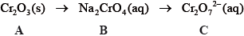
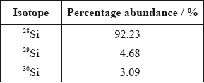
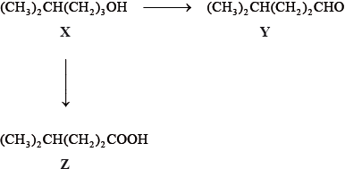
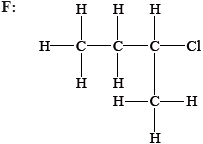
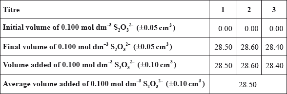
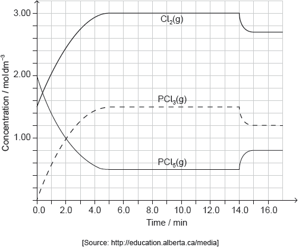

SL Paper 2
State the relative mass and charge of the subatomic particles of an atom.

(i) Calculate the number of neutrons and electrons in one atom of \(^{{\text{65}}}{\text{Cu}}\).
Neutrons:
Electrons:
(ii) State one difference in the physical properties of the isotopes \(^{{\text{63}}}{\text{Cu}}\) and \(^{{\text{65}}}{\text{Cu}}\) and explain why their chemical properties are the same.
Physical:
Chemical:
Describe the bonding in solid copper.
Suggest two properties of copper that make it useful and economically important.
Graphite has a layered structure of carbon atoms. A section of the structure is shown below.

Explain why the distance between adjacent carbon atoms within a layer is shorter than the distance between layers.
Graphite is used as a lubricant. Discuss two other uses of graphite with reference to its layered structure.
Ionic bonding and covalent bonding are two types of bonding.
Consider the molecules sulfur difluoride, \({\text{S}}{{\text{F}}_{\text{2}}}\), boron trifluoride, \({\text{B}}{{\text{F}}_{\text{3}}}\), and phosphorus trichloride, \({\text{PC}}{{\text{l}}_{\text{3}}}\).
Ionic bonding occurs in sodium chloride. Describe what is meant by the term ionic bonding.
Sodium chloride has a lattice structure. Describe the lattice structure of sodium chloride including a suitable representative three-dimensional diagram. On the diagram, label each ion and distinguish between the different types of ions present using different sized spheres.
Ammonium phosphate is also an ionic compound, used in the manufacture of fertilizers. State the chemical formula of ammonium phosphate.
Deduce the Lewis (electron dot) structure and predict the shape of each molecule, using the valence shell electron pair repulsion theory (VSEPR).

State and explain the F–S–F bond angle in SF2.
Deduce whether each of the three molecules is polar or non-polar, giving your reason in each case.
SF2:
BF3:
PCl3:
Using electronegativity values from Table 7 of the Data Booklet, state and explain which of the following compounds, IBr, BaCl2, CsI and HBr are ionic and which compounds are covalent.
IBr:
BaCl2:
CsI:
HBr:
Lithium and boron are elements in period 2 of the periodic table. Lithium occurs in group 1 (the alkali metals) and boron occurs in group 3. Isotopes exist for both elements.
Every element has its own unique line emission spectrum.
(i) Define the terms atomic number, mass number and isotopes of an element.
Atomic number:
Mass number:
Isotopes of an element:
(ii) Distinguish between the terms group and period.
(iii) Deduce the electron arrangements of the lithium ion, \({\text{L}}{{\text{i}}^ + }\), and the boron atom, B.
\({\text{L}}{{\text{i}}^ + }\):
B:
(iv) Naturally occurring boron exists as two isotopes with mass numbers of 10 and 11. Calculate the percentage abundance of the lighter isotope, using this information and the relative atomic mass of boron in Table 5 of the Data Booklet.
v) Lithium exists as two isotopes with mass numbers of 6 and 7. Deduce the number of protons, electrons and neutrons for each isotope.

(i) Distinguish between a continuous spectrum and a line spectrum.
(ii) Draw a diagram to show the electron transitions between energy levels in a hydrogen atom that are responsible for the two series of lines in the ultraviolet and visible regions of the spectrum. Label your diagram to show three transitions for each series.
(i) Explain why metals are good conductors of electricity and why they are malleable.
(ii) Iron is described as a transition metal. Identify the two most common ions of iron.
iii) Deduce the chemical formulas of lithium oxide and iron(II) oxide.
Lithium oxide:
Iron(II) oxide:
Airbags are an important safety feature in vehicles. Sodium azide, potassium nitrate and silicon dioxide have been used in one design of airbag.

Sodium azide, a toxic compound, undergoes the following decomposition reaction under certain conditions.
\[{\text{2Na}}{{\text{N}}_{\text{3}}}{\text{(s)}} \to {\text{2Na(s)}} + {\text{3}}{{\text{N}}_{\text{2}}}{\text{(g)}}\]
Two students looked at data in a simulated computer-based experiment to determine the volume of nitrogen generated in an airbag.
Using the simulation programme, the students entered the following data into the computer.

The chemistry of the airbag was found to involve three reactions. The first reaction involves the decomposition of sodium azide to form sodium and nitrogen. In the second reaction, potassium nitrate reacts with sodium.
\[{\text{2KN}}{{\text{O}}_3}{\text{(s)}} + {\text{10Na(s)}} \to {{\text{K}}_2}{\text{O(s)}} + {\text{5N}}{{\text{a}}_2}{\text{O(s)}} + {{\text{N}}_2}{\text{(g)}}\]
An airbag inflates very quickly.
Sodium azide involves ionic bonding, and metallic bonding is present in sodium. Describe ionic and metallic bonding.
State the number of significant figures for the temperature, mass and pressure data.
T:
m:
p:
Calculate the amount, in mol, of sodium azide present.
Determine the volume of nitrogen gas, in \({\text{d}}{{\text{m}}^{\text{3}}}\), produced under these conditions based on this reaction.
Suggest why it is necessary for sodium to be removed by this reaction.
The metal oxides from the second reaction then react with silicon dioxide to form a silicate in the third reaction.
\[{{\text{K}}_2}{\text{O(s)}} + {\text{N}}{{\text{a}}_2}{\text{O(s)}} + {\text{Si}}{{\text{O}}_2}{\text{(s)}} \to {\text{N}}{{\text{a}}_2}{{\text{K}}_2}{\text{Si}}{{\text{O}}_4}{\text{(s)}}\]
Draw the structure of silicon dioxide and state the type of bonding present.
Structure:
Bonding:
It takes just 0.0400 seconds to produce nitrogen gas in the simulation. Calculate the average rate of formation of nitrogen in (b) (iii) and state its units.
The students also discovered that a small increase in temperature (e.g. 10 °C) causes a large increase (e.g. doubling) in the rate of this reaction. State one reason for this.
In December 2010, researchers in Sweden announced the synthesis of N,N–dinitronitramide, \({\text{N(N}}{{\text{O}}_{\text{2}}}{{\text{)}}_{\text{3}}}\). They speculated that this compound, more commonly called trinitramide, may have significant potential as an environmentally friendly rocket fuel oxidant.
Methanol reacts with trinitramide to form nitrogen, carbon dioxide and water. Deduce the coefficients required to balance the equation for this reaction.
___ \({\text{N(N}}{{\text{O}}_2}{{\text{)}}_3}{\text{(g)}} + \) ___ \({\text{C}}{{\text{H}}_3}{\text{OH(l)}} \to \) ___ \({{\text{N}}_2}{\text{(g)}} + \) ___ \({\text{C}}{{\text{O}}_2}{\text{(g)}} + \) ___ \({{\text{H}}_2}{\text{O(l)}}\)
Calculate the enthalpy change, in \({\text{kJ}}\,{\text{mo}}{{\text{l}}^{ - 1}}\), when one mole of trinitramide decomposes to its elements, using bond enthalpy data from Table 10 of the Data Booklet. Assume that all the N–O bonds in this molecule have a bond enthalpy of \({\text{305 kJ}}\,{\text{mo}}{{\text{l}}^{ - 1}}\).
Outline how the length of the N–N bond in trinitramide compares with the N–N bond in nitrogen gas, \({{\text{N}}_{\text{2}}}\).
Deduce the N–N–N bond angle in trinitramide and explain your reasoning.
Predict, with an explanation, the polarity of the trinitramide molecule.
Methanol can also be burnt as a fuel. Describe an experiment that would allow the molar enthalpy change of combustion to be calculated from the results.
Explain how the results of this experiment could be used to calculate the molar enthalpy change of combustion of methanol.
Predict, with an explanation, how the result obtained would compare with the value in Table 12 of the Data Booklet.
Ammonia, \({\text{N}}{{\text{H}}_{\text{3}}}\), is a weak base.
Iron is more reactive than copper.
Draw the Lewis structure of ammonia and state the shape of the molecule and its bond angles.
The conjugate acid of ammonia is the ammonium ion, \({\text{NH}}_4^ + \). Draw the Lewis structure of the ammonium ion and deduce its shape and bond angles.
Describe two different properties that could be used to distinguish between a \({\text{1.00 mol}}\,{\text{d}}{{\text{m}}^{ - 3}}\) solution of a strong monoprotic acid and a \({\text{1.00 mol}}\,{\text{d}}{{\text{m}}^{ - 3}}\) solution of a weak monoprotic acid.
Explain, using the Brønsted-Lowry theory, how water can act either as an acid or a base. In each case identify the conjugate acid or base formed.
Draw a labelled diagram of a voltaic cell made from an \({\text{Fe(s)}}/{\text{F}}{{\text{e}}^{2 + }}{\text{(aq)}}\) half-cell connected to a \({\text{Cu(s)}}/{\text{C}}{{\text{u}}^{2 + }}{\text{(aq)}}\) half-cell. In your diagram identify the positive electrode (cathode), the negative electrode (anode) and the direction of electron flow in the external circuit.
Deduce the half-equations for the reactions taking place at the positive electrode (cathode) and negative electrode (anode) of this voltaic cell.
Deduce the overall equation for the reaction taking place in the voltaic cell and determine which species acts as the oxidizing agent and which species has been reduced.
Predict the shape and bond angles for the following species:
Ethanoic acid, \({\text{C}}{{\text{H}}_{\text{3}}}{\text{COOH}}\), is a weak acid.
Draw the Lewis structures for carbon monoxide, CO, carbon dioxide, \({\text{C}}{{\text{O}}_{\text{2}}}\) and methanol, \({\text{C}}{{\text{H}}_{\text{3}}}{\text{OH}}\).
List, with an explanation, the three compounds in order of increasing carbon to oxygen bond length (shortest first).
\({\text{C}}{{\text{O}}_{\text{2}}}\)
\({\text{CO}}_3^{2 - }\)
\({\text{BF}}_4^ - \)
Define a Brønsted-Lowry acid.
Deduce the two acids and their conjugate bases in the following reaction:
\[{{\text{H}}_2}{\text{O(l)}} + {\text{N}}{{\text{H}}_3}{\text{(aq)}} \rightleftharpoons {\text{O}}{{\text{H}}^ - }{\text{(aq)}} + {\text{NH}}_4^ + {\text{(aq)}}\]
Define the term weak acid and state the equation for the reaction of ethanoic acid with water.
Vinegar, which contains ethanoic acid, can be used to clean deposits of calcium carbonate from the elements of electric kettles. State the equation for the reaction of ethanoic acid with calcium carbonate.
Methoxymethane, \({\text{C}}{{\text{H}}_{\text{3}}}{\text{OC}}{{\text{H}}_{\text{3}}}\), and ethanol, \({{\text{C}}_{\text{2}}}{{\text{H}}_{\text{5}}}{\text{OH}}\), have the same relative molecular mass. Explain why methoxymethane has a much lower boiling point than ethanol.
Biodiesel makes use of plants’ ability to fix atmospheric carbon by photosynthesis. Many companies and individuals are now using biodiesel as a fuel in order to reduce their carbon footprint. Biodiesel can be synthesized from vegetable oil according to the following reaction.

The reversible arrows in the equation indicate that the production of biodiesel is an equilibrium process.
Identify the organic functional group present in both vegetable oil and biodiesel.
For part of her extended essay investigation into the efficiency of the process, a student reacted a pure sample of a vegetable oil (where \({\text{R}} = {{\text{C}}_{{\text{17}}}}{{\text{H}}_{{\text{33}}}}\)) with methanol. The raw data recorded for the reaction is below.
\[\begin{array}{*{20}{l}} {{\text{Mass of oil}}}&{ = 1013.0{\text{ g}}} \\ {{\text{Mass of methanol}}}&{ = 200.0{\text{ g}}} \\ {{\text{Mass of sodium hydroxide}}}&{ = 3.5{\text{ g}}} \\ {{\text{Mass of biodiesel produced}}}&{ = 811.0{\text{ g}}} \end{array}\]
The relative molecular mass of the oil used by the student is 885.6. Calculate the amount (in moles) of the oil and the methanol used, and hence the amount (in moles) of excess methanol.
State what is meant by the term dynamic equilibrium.
Using the abbreviations [vegetable oil], [methanol], [glycerol] and [biodiesel] deduce the equilibrium constant expression \({\text{(}}{K_{\text{c}}}{\text{)}}\) for this reaction.
Suggest a reason why excess methanol is used in this process.
State and explain the effect that the addition of the sodium hydroxide catalyst will have on the position of equilibrium.
The reactants had to be stirred vigorously because they formed two distinct layers in the reaction vessel. Explain why they form two distinct layers and why stirring increases the rate of reaction.
Calculate the percentage yield of biodiesel obtained in this process.
Group 7 of the periodic table contains a number of reactive elements such as chlorine, bromine and iodine.
Bleaches in which chlorine is the active ingredient are the most common, although some environmental groups have concerns about their use. In aqueous chlorine the equilibrium below produces chloric(I) acid (hypochlorous acid), HOCl, the active bleach.
\[{\text{C}}{{\text{l}}_2}{\text{(aq)}} + {{\text{H}}_2}{\text{O(l)}} \rightleftharpoons {\text{HOCl (aq)}} + {{\text{H}}^ + }{\text{(aq)}} + {\text{C}}{{\text{l}}^ - }{\text{(aq)}}\]
Aqueous sodium chlorate(I), NaOCl, the most common active ingredient in chlorine based bleaches, oxidizes coloured materials to colourless products while being reduced to the chloride ion. It will also oxidize sulfur dioxide to the sulfate ion.
(i) Describe the colour change that occurs when aqueous chlorine is added to aqueous sodium bromide.
(ii) Outline, with the help of a chemical equation, why this reaction occurs.
The colour change in the reaction between aqueous chlorine and aqueous sodium iodide is very similar, but it differs with an excess of aqueous chlorine. Describe the appearance of the reaction mixture when excess aqueous chlorine has been added to aqueous sodium iodide.
Chloric(I) acid is a weak acid, but hydrochloric acid is a strong acid. Outline how this is indicated in the equation above.
State a balanced equation for the reaction of chloric(I) acid with water.
Outline, in terms of the equilibrium above, why it is dangerous to use an acidic toilet cleaner in combination with this kind of bleach.
Suggest why a covalent molecule, such as chloric(I) acid, is readily soluble in water.
Draw the Lewis (electron dot) structure of chloric(I) acid.
Predict the H–O–Cl bond angle in this molecule and explain this in terms of the valence shell electron pair repulsion (VSEPR) theory.
(i) Deduce the coefficients required to balance the half-equations given below.
___ \({\text{Cl}}{{\text{O}}^ - } + \) ___ \({{\text{H}}^ + } + \) ___ \({{\text{e}}^ - } \rightleftharpoons \) ___ \({{\text{H}}_2}{\text{O}} + \) ___ \({\text{C}}{{\text{l}}^ - }\)
___ \({\text{SO}}_4^{2 - }\) ___ \({{\text{H}}^ + } + \) ___ \({{\text{e}}^ - } \rightleftharpoons \) ___ \({\text{S}}{{\text{O}}_2} + \) ___ \({{\text{H}}_2}{\text{O}}\)
(ii) State the initial and final oxidation numbers of both chlorine and sulfur in the equations in part (i).

(iii) Use the half-equations to deduce the balanced equation for the reaction between the chlorate(I) ion and sulfur dioxide.
Arsenic and nitrogen play a significant role in environmental chemistry. Arsenous acid, H3AsO3, can be found in oxygen-poor (anaerobic) water, and nitrogen-containing fertilizers can contaminate water.
Nitric acid, HNO3, is strong and nitrous acid, HNO2, is weak.
(i) Define oxidation and reduction in terms of electron loss or gain.
Oxidation:
Reduction:
(ii) Deduce the oxidation numbers of arsenic and nitrogen in each of the following species.
\({\text{A}}{{\text{s}}_{\text{2}}}{{\text{O}}_{\text{3}}}\):
\({\text{NO}}_3^ - \):
\({{\text{H}}_{\text{3}}}{\text{As}}{{\text{O}}_{\text{3}}}\):
\({{\text{N}}_{\text{2}}}{{\text{O}}_{\text{3}}}\):
(iii) Distinguish between the terms oxidizing agent and reducing agent.
(iv) In the removal of arsenic from contaminated groundwater, \({{\text{H}}_{\text{3}}}{\text{As}}{{\text{O}}_{\text{3}}}\) is often first oxidized to arsenic acid, \({{\text{H}}_{\text{3}}}{\text{As}}{{\text{O}}_{\text{4}}}\).
The following unbalanced redox reaction shows another method of forming \({{\text{H}}_{\text{3}}}{\text{As}}{{\text{O}}_{\text{4}}}\).
\[{\text{A}}{{\text{s}}_2}{{\text{O}}_3}{\text{(s)}} + {\text{NO}}_3^ - {\text{(aq)}} \to {{\text{H}}_3}{\text{As}}{{\text{O}}_4}{\text{(aq)}} + {{\text{N}}_2}{{\text{O}}_3}{\text{(aq)}}\]
Deduce the balanced redox equation in acid, and then identify both the oxidizing and reducing agents.
Define an acid according to the Brønsted–Lowry and Lewis theories.
Brønsted–Lowry theory:
Lewis theory:
The Lewis (electron dot) structure of nitrous acid is given below.

Identify which nitrogen-oxygen bond is the shorter.
Deduce the approximate value of the hydrogen-oxygen-nitrogen bond angle in nitrous acid and explain your answer.
Distinguish between a strong acid and a weak acid in terms of their dissociation in aqueous solution.
Ammonia, NH3, is a weak base. Deduce the Lewis (electron dot) structure of NH3. State the name of the shape of the molecule and explain why NH3 is a polar molecule.
When lime was added to a sample of soil, the pH changed from 5 to 7. Calculate the factor by which the hydrogen ion concentration changes.
One common nitrogen-containing fertilizer is ammonium sulfate. State its chemical formula.
A class studied the equilibrium established when ethanoic acid and ethanol react together in the presence of a strong acid, using propanone as an inert solvent. The equation is given below.
\[{\text{C}}{{\text{H}}_{\text{3}}}{\text{COOH}} + {{\text{C}}_{\text{2}}}{{\text{H}}_{\text{5}}}{\text{OH}} \rightleftharpoons {\text{C}}{{\text{H}}_{\text{3}}}{\text{COO}}{{\text{C}}_{\text{2}}}{{\text{H}}_{\text{5}}} + {{\text{H}}_{\text{2}}}{\text{O}}\]
One group made the following initial mixture:

After one week, a \(5.00 \pm 0.05{\text{ c}}{{\text{m}}^{\text{3}}}\) sample of the final equilibrium mixture was pipetted out and titrated with \({\text{0.200 mol}}\,{\text{d}}{{\text{m}}^{ - 2}}\) aqueous sodium hydroxide to determine the amount of ethanoic acid remaining. The following titration results were obtained:

The density of ethanoic acid is \({\text{1.05 g}}\,{\text{c}}{{\text{m}}^{ - 3}}\). Determine the amount, in mol, of ethanoic acid present in the initial mixture.
The hydrochloric acid does not appear in the balanced equation for the reaction. State its function.
Identify the liquid whose volume has the greatest percentage uncertainty.
(i) Calculate the absolute uncertainty of the titre for Titration 1 (\({\text{27.60 c}}{{\text{m}}^{\text{3}}}\)).
(ii) Suggest the average volume of alkali, required to neutralize the \({\text{5.00 c}}{{\text{m}}^{\text{3}}}\) sample, that the student should use.
(iii) \({\text{23.00 c}}{{\text{m}}^{\text{3}}}\) of this \({\text{0.200 mol}}\,{\text{d}}{{\text{m}}^{ - 3}}\) aqueous sodium hydroxide reacted with the ethanoic acid in the \({\text{5.00 c}}{{\text{m}}^{\text{3}}}\) sample. Determine the amount, in mol, of ethanoic acid present in the \({\text{50.0 c}}{{\text{m}}^{\text{3}}}\) of final equilibrium mixture.
Referring back to your answer for part (a), calculate the percentage of ethanoic acid converted to ethyl ethanoate.
Deduce the equilibrium constant expression for the reaction.
Outline how you could establish that the system had reached equilibrium at the end of one week.
Outline why changing the temperature has only a very small effect on the value of the equilibrium constant for this equilibrium.
Outline how adding some ethyl ethanoate to the initial mixture would affect the amount of ethanoic acid converted to product.
Propanone is used as the solvent because one compound involved in the equilibrium is insoluble in water. Identify this compound and explain why it is insoluble in water.
Suggest one other reason why using water as a solvent would make the experiment less successful.
Consider the following three organic compounds: butane, \({\text{C}}{{\text{H}}_{\text{3}}}{\text{C}}{{\text{H}}_{\text{2}}}{\text{C}}{{\text{H}}_{\text{2}}}{\text{C}}{{\text{H}}_{\text{3}}}\); propanal, \({\text{C}}{{\text{H}}_{\text{3}}}{\text{C}}{{\text{H}}_{\text{2}}}{\text{CHO}}\); and ethanoic acid, \({\text{C}}{{\text{H}}_{\text{3}}}{\text{COOH}}\).
Deduce the order of increasing solubility in water of the three compounds.
Explain your reasoning.
Iron rusts in the presence of oxygen and water. Rusting is a redox process involving several steps that produces hydrated iron(III) oxide, \({\text{F}}{{\text{e}}_{\text{2}}}{{\text{O}}_{\text{3}}} \bullet {\text{n}}{{\text{H}}_{\text{2}}}{\text{O}}\), as the final product.
The half-equations involved for the first step of rusting are given below.
Half-equation 1: \({\text{Fe(s)}} \to {\text{F}}{{\text{e}}^{2 + }}{\text{(aq)}} + {\text{2}}{{\text{e}}^ - }\)
Half-equation 2: \({{\text{O}}_{\text{2}}}{\text{(aq)}} + {\text{4}}{{\text{e}}^ - } + {\text{2}}{{\text{H}}_{\text{2}}}{\text{O(l)}} \to {\text{4O}}{{\text{H}}^ - }{\text{(aq)}}\)
A voltaic cell is made from a half-cell containing a magnesium electrode in a solution of magnesium nitrate and a half-cell containing a silver electrode in a solution of silver(I) nitrate.

Hydrogen peroxide decomposes according to the equation below.
\[{\text{2}}{{\text{H}}_{\text{2}}}{{\text{O}}_{\text{2}}}{\text{(aq)}} \to {\text{2}}{{\text{H}}_{\text{2}}}{\text{O(l)}} + {{\text{O}}_{\text{2}}}{\text{(g)}}\]
The rate of the decomposition can be monitored by measuring the volume of oxygen gas released. The graph shows the results obtained when a solution of hydrogen peroxide decomposed in the presence of a CuO catalyst.

(i) Identify whether half-equation 1 represents oxidation or reduction, giving a reason for your answer.
(ii) Identify the oxidation number of each atom in the three species in half-equation 2.

(iii) Deduce the overall redox equation for the first step of rusting by combining half-equations 1 and 2.
(iv) Identify the reducing agent in the redox equation in part (iii).
The oxygen in half-equation 2 is atmospheric oxygen that is found dissolved in water in very small concentrations. Explain, in terms of intermolecular forces, why oxygen is not very soluble in water.
(i) Given that magnesium is more reactive than silver, deduce the half-equations for the reactions occurring at each electrode, including state symbols.
Negative electrode (anode):
Positive electrode (cathode):
(ii) Outline one function of the salt bridge.
(i) State the property that determines the order in which elements are arranged in the periodic table.
(ii) State the relationship between the electron arrangement of an element and its group and period in the periodic table.
(i) The experiment is repeated with the same amount of a more effective catalyst, \({\text{Mn}}{{\text{O}}_{\text{2}}}\), under the same conditions and using the same concentration and volume of hydrogen peroxide. On the graph above, sketch the curve you would expect.
(ii) Outline how the initial rate of reaction can be found from the graph.
(iii) Outline a different experimental procedure that can be used to monitor the decomposition rate of hydrogen peroxide.
(iv) A Maxwell–Boltzmann energy distribution curve is drawn below. Label both axes and explain, by annotating the graph, how catalysts increase the rate of reaction.

Bonds can be formed in many ways.
The landing module for the Apollo mission used rocket fuel made from a mixture of hydrazine, N2H4, and dinitrogen tetraoxide, N2O4.
N2H4(l) + N2O4(l) → 3N2(g) + 4H2O(g)
State and explain the difference in bond strength between the nitrogen atoms in a hydrazine and nitrogen molecule.
State why hydrazine has a higher boiling point than dinitrogen tetraoxide.
Determine the oxidation state of nitrogen in the two reactants.
![]()
Deduce, giving a reason, which species is the reducing agent.
Deduce the Lewis (electron dot) structures of ozone.
Draw the Lewis (electron dot) structure of chloromethane.
Predict the shape of the chloromethane molecule and the H–C–H bond angle.
Shape:
Bond angle:
Explain why chloromethane is a polar molecule.
Methanol has a lower molar mass than chloromethane. Explain why the boiling point of methanol is higher than that of chloromethane.
State the equation for the reaction between potassium and chlorine.
Outline the nature of the metallic bonding present in potassium.
Describe the covalent bond present in the chlorine molecule and how it is formed.
Describe the ionic bonding present in potassium chloride and how the ions are formed.
Potassium also reacts with water to form hydrogen gas. Determine the volume, in \({\text{c}}{{\text{m}}^{\text{3}}}\), of hydrogen gas that could theoretically be produced at 273 K and \(1.01 \times {10^5}{\text{ Pa}}\) when 0.0587 g of potassium reacts with excess water.
Identify the acid-base character of the oxides of each of the elements from sodium to chlorine in period 3.
State the equations for the separate reactions of sodium oxide and phosphorus(V) oxide with water.
Across period 3, elements increase in atomic number, decrease in atomic radius and increase in electronegativity.
Define the term electronegativity.
Explain why the atomic radius of elements decreases across the period.
State the equations for the reactions of sodium oxide with water and phosphorus(V) oxide with water.
Suggest the pH of the solutions formed in part (c) (i).
Describe three tests that can be carried out in the laboratory, and the expected results, to distinguish between \({\text{0.10 mol}}\,{\text{d}}{{\text{m}}^{ - 3}}{\text{ HCl(aq)}}\) and \({\text{0.10 mol}}\,{\text{d}}{{\text{m}}^{ - 3}}{\text{ C}}{{\text{H}}_{\text{3}}}{\text{COOH(aq)}}\).
Explain whether BF3 can act as a Brønsted-Lowry acid, a Lewis acid or both.
Describe the bonding and structure of sodium chloride.
State the formula of the compounds formed between the elements below.
Sodium and sulfur:
Magnesium and phosphorus:
Covalent bonds form when phosphorus reacts with chlorine to form \({\text{PC}}{{\text{l}}_{\text{3}}}\). Deduce the Lewis (electron dot) structure, the shape and bond angle in \({\text{PC}}{{\text{l}}_{\text{3}}}\) and explain why the molecule is polar.
Lewis (electron dot) structure:
Name of shape:
Bond angle:
Explanation of polarity of molecule:
Both sodium and sodium chloride can conduct electricity.
Compare how electric current passes through sodium and sodium chloride by completing the table below.

Sodium can be obtained by electrolysis from molten sodium chloride. Describe, using a diagram, the essential components of this electrolytic cell.
Phosphine (IUPAC name phosphane) is a hydride of phosphorus, with the formula PH3.
(i) Draw a Lewis (electron dot) structure of phosphine.
(ii) Outline whether you expect the bonds in phosphine to be polar or non-polar, giving a brief reason.
(iii) Explain why the phosphine molecule is not planar.
(iv) Phosphine has a much greater molar mass than ammonia. Explain why phosphine has a significantly lower boiling point than ammonia.
Phosphine is usually prepared by heating white phosphorus, one of the allotropes of phosphorus, with concentrated aqueous sodium hydroxide. The equation for the reaction is:
P4 (s) + 3OH− (aq) + 3H2O (l) → PH3 (g) + 3H2PO2− (aq)
(i) Identify one other element that has allotropes and list two of its allotropes.
Element:
Allotrope 1:
Allotrope 2:
(ii) The first reagent is written as P4, not 4P. Describe the difference between P4 and 4P.
(iii) The ion H2PO2− is amphiprotic. Outline what is meant by amphiprotic, giving the formulas of both species it is converted to when it behaves in this manner.
(iv) State the oxidation state of phosphorus in P4 and H2PO2−.
P4:
H2PO2−:
(v) Oxidation is now defined in terms of change of oxidation number. Explore how earlier definitions of oxidation and reduction may have led to conflicting answers for the conversion of P4 to H2PO2− and the way in which the use of oxidation numbers has resolved this.
2.478 g of white phosphorus was used to make phosphine according to the equation:
P4(s) +3OH−(aq)+3H2O(l) → PH3(g)+3H2PO2−(aq)
(i) Calculate the amount, in mol, of white phosphorus used.
(ii) This phosphorus was reacted with 100.0 cm3 of 5.00 mol dm−3 aqueous sodium hydroxide. Deduce, showing your working, which was the limiting reagent.
(iii) Determine the excess amount, in mol, of the other reagent.
(iv) Determine the volume of phosphine, measured in cm3 at standard temperature and pressure, that was produced.
PF3, SF2 and SiF4 have different shapes. Draw their Lewis structures and use the VSEPR theory to predict the name of the shape of each molecule.

Intermolecular forces are attractive forces between molecules.
Consider the compounds \({{\text{(C}}{{\text{H}}_{\text{3}}}{\text{)}}_{\text{2}}}{\text{NH}}\) and \({\text{C}}{{\text{H}}_{\text{4}}}\).
Identify the intermolecular forces present in hydrogen iodide in the liquid state, HI(l).
Deduce the full structural formula for both compounds, showing all the bonds present.
\({{\text{(C}}{{\text{H}}_{\text{3}}}{\text{)}}_{\text{2}}}{\text{NH}}\)\(\quad \quad \quad \quad \quad \quad \quad \quad \quad \quad \quad \quad \quad \quad \quad \)\({\text{C}}{{\text{H}}_{\text{4}}}\)
State and explain which compound can form hydrogen bonds with water.
Draw a diagram showing the resulting hydrogen bonds between water and the compound chosen in (ii).
Phosphorus tribromide (\({\text{PB}}{{\text{r}}_{\text{3}}}\)) is used to manufacture alprazolam, a drug used to treat anxiety disorders. Methanal (HCHO) is used as a disinfectant.
Consider the following reaction sequence:

Deduce the balanced chemical equation for the reaction between sodium and sulfur. State the electron arrangements of the reactants and product, and explain whether sulfur is oxidized or reduced.
Describe the acid-base character of the oxides of the period 3 elements, Na to Cl. For the compounds sodium oxide and phosphorus(V) oxide, state the balanced chemical equations for the reaction of each oxide with water.
For each of the species \({\text{PB}}{{\text{r}}_{\text{3}}}\) and HCHO:
• deduce the Lewis structure.
• predict the shape and bond angle.
Explain why \({\text{PB}}{{\text{r}}_{\text{3}}}\) is a polar molecule.
State the name of A.
Describe the redox behaviour of chromium with reference to oxidation numbers in the conversion of B to C.
Define the term oxidizing agent and identify the oxidizing agent in the following
reaction.
\[{\text{C}}{{\text{r}}_2}{\text{O}}_7^{2 - }{\text{(aq)}} + {{\text{I}}^ - }{\text{(aq)}} + {\text{8}}{{\text{H}}^ + }{\text{(aq)}} \to {\text{2C}}{{\text{r}}^{3 + }}{\text{(aq)}} + {\text{IO}}_3^ - {\text{(aq)}} + {\text{4}}{{\text{H}}_2}{\text{O(l)}}\]
Chloroethene, C2H3Cl, is an important organic compound used to manufacture the polymer poly(chloroethene).
Draw the Lewis structure for chloroethene and predict the H–C–Cl bond angle.
Draw a section of poly(chloroethene) containing six carbon atoms.
Outline why the polymerization of alkenes is of economic importance and why the disposal of plastics is a problem.
Chloroethene can be converted to ethanol in two steps. For each step deduce an overall equation for the reaction taking place.
Step 1:
Step 2:
State the reagents and conditions necessary to prepare ethanoic acid from ethanol in the laboratory.
State an equation, including state symbols, for the reaction of ethanoic acid with water. Identify a Brønsted-Lowry acid in the equation and its conjugate base.
Define the term isotopes.
A sample of silicon contains three isotopes.

Calculate the relative atomic mass of silicon using this data.
Describe the structure and bonding in silicon dioxide and carbon dioxide.
Draw the Lewis structure of NH3, state its shape and deduce and explain the H–N–H bond angle in \({\text{N}}{{\text{H}}_{\text{3}}}\).
The graph below shows the boiling points of the hydrides of group 5. Discuss the variation in the boiling points.

Explain, using diagrams, why CO and \({\text{N}}{{\text{O}}_{\text{2}}}\) are polar molecules but \({\text{C}}{{\text{O}}_{\text{2}}}\) is a non-polar molecule.
A sample of magnesium contains three isotopes: magnesium-24, magnesium-25 and magnesium-26, with abundances of 77.44%, 10.00% and 12.56% respectively.
Phosphorus(V) oxide, \({{\text{P}}_{\text{4}}}{{\text{O}}_{{\text{10}}}}{\text{ }}({M_{\text{r}}} = 283.88)\), reacts vigorously with water \(({M_{\text{r}}} = 18.02)\), according to the equation below.
\[{{\text{P}}_{\text{4}}}{{\text{O}}_{{\text{10}}}}{\text{(s)}} + {\text{6}}{{\text{H}}_{\text{2}}}{\text{O(l)}} \to {\text{4}}{{\text{H}}_{\text{3}}}{\text{P}}{{\text{O}}_{\text{4}}}{\text{(aq)}}\]
Calculate the relative atomic mass of this sample of magnesium correct to two decimal places.
Predict the relative atomic radii of the three magnesium isotopes, giving your reasons.
Describe the bonding in magnesium.
State an equation for the reaction of magnesium oxide with water.
A student added 5.00 g of \({{\text{P}}_{\text{4}}}{{\text{O}}_{{\text{10}}}}\) to 1.50 g of water. Determine the limiting reactant, showing your working.
Calculate the mass of phosphoric(V) acid, \({{\text{H}}_{\text{3}}}{\text{P}}{{\text{O}}_{\text{4}}}\), formed in the reaction.
State a balanced equation for the reaction of aqueous \({{\text{H}}_{\text{3}}}{\text{P}}{{\text{O}}_{\text{4}}}\) with excess aqueous sodium hydroxide, including state symbols.
State the formula of the conjugate base of \({{\text{H}}_{\text{3}}}{\text{P}}{{\text{O}}_{\text{4}}}\).
(i) Deduce the Lewis structure of \({\text{PH}}_4^ + \).
(ii) Predict, giving a reason, the bond angle around the phosphorus atom in \({\text{PH}}_4^ + \).
(iii) Predict whether or not the P–H bond is polar, giving a reason for your choice.
The element boron has two naturally occurring isotopes, \(^{{\text{10}}}{\text{B}}\) and \(^{{\text{11}}}{\text{B}}\).
Define the term isotopes of an element.
Calculate the percentage abundance of each isotope, given that the relative atomic mass of B is 10.81.
Deduce the Lewis structures of \({\text{N}}{{\text{H}}_{\text{3}}}\) and \({\text{B}}{{\text{F}}_{\text{3}}}\).
\[{\text{N}}{{\text{H}}_{\text{3}}}\quad \quad \quad \quad \quad \quad \quad \quad \quad \quad \quad \quad \quad \quad \quad {\text{B}}{{\text{F}}_{\text{3}}}\]
Describe how covalent bonds are formed.
Compare the shapes of the two molecules and explain the difference using valence shell electron pair repulsion theory (VSEPR).
Predict and explain whether the molecules \({\text{N}}{{\text{H}}_{\text{3}}}\) and \({\text{B}}{{\text{F}}_{\text{3}}}\) are polar molecules.
The concentration of a solution of a weak acid, such as ethanedioic acid, can be determined
by titration with a standard solution of sodium hydroxide, NaOH (aq).
Distinguish between a weak acid and a strong acid.
Weak acid:
Strong acid:
Suggest why it is more convenient to express acidity using the pH scale instead of using the concentration of hydrogen ions.
5.00 g of an impure sample of hydrated ethanedioic acid, (COOH)2•2H2O, was dissolved in water to make 1.00 dm3 of solution. 25.0 cm3 samples of this solution were titrated against a 0.100 mol dm-3 solution of sodium hydroxide using a suitable indicator.
(COOH)2 (aq) + 2NaOH (aq) → (COONa)2 (aq) + 2H2O (l)
The mean value of the titre was 14.0 cm3.
(i) Calculate the amount, in mol, of NaOH in 14.0 cm3 of 0.100 mol dm-3 solution.
(ii) Calculate the amount, in mol, of ethanedioic acid in each 25.0 cm3 sample.
(iii) Determine the percentage purity of the hydrated ethanedioic acid sample.
The Lewis (electron dot) structure of the ethanedioate ion is shown below.
![]()
Outline why all the C–O bond lengths in the ethanedioate ion are the same length and suggest a value for them. Use section 10 of the data booklet.
Aspirin, one of the most widely used drugs in the world, can be prepared according to the equation given below.

A student reacted some salicylic acid with excess ethanoic anhydride. Impure solid aspirin was obtained by filtering the reaction mixture. Pure aspirin was obtained by recrystallization. The following table shows the data recorded by the student.

State the names of the three organic functional groups in aspirin.
Determine the amount, in mol, of salicylic acid, \({{\text{C}}_{\text{6}}}{{\text{H}}_{\text{4}}}{\text{(OH)COOH}}\), used.
Calculate the theoretical yield, in g, of aspirin, \({{\text{C}}_{\text{6}}}{{\text{H}}_{\text{4}}}{\text{(OCOC}}{{\text{H}}_{\text{3}}}{\text{)COOH}}\).
Determine the percentage yield of pure aspirin.
State the number of significant figures associated with the mass of pure aspirin obtained, and calculate the percentage uncertainty associated with this mass.
Another student repeated the experiment and obtained an experimental yield of 150%. The teacher checked the calculations and found no errors. Comment on the result.
The following is a three-dimensional computer-generated representation of aspirin.

A third student measured selected bond lengths in aspirin, using this computer program and reported the following data.

The following hypothesis was suggested by the student: “Since all the measured carbon-carbon bond lengths are equal, all the carbon-oxygen bond lengths must also be equal in aspirin. Therefore, the C8–O4 bond length must be 1.4 \( \times \) 10–10 m”. Comment on whether or not this is a valid hypothesis.
The other product of the reaction is ethanoic acid, \({\text{C}}{{\text{H}}_{\text{3}}}{\text{COOH}}\). Define an acid according to the Brønsted-Lowry theory and state the conjugate base of \({\text{C}}{{\text{H}}_{\text{3}}}{\text{COOH}}\).
Brønsted-Lowry definition of an acid:
Conjugate base of \({\text{C}}{{\text{H}}_{\text{3}}}{\text{COOH}}\):
Periodic trends enable chemists to predict the behaviour of related compounds.
Chlorine gas, \({\text{C}}{{\text{l}}_{\text{2}}}{\text{(g)}}\), is bubbled through separate solutions of aqueous bromine, \({\text{B}}{{\text{r}}_{\text{2}}}{\text{(aq)}}\), and potassium bromide, \({\text{KBr(aq)}}\).
The hydrogen halides do not show perfect periodicity. A bar chart of boiling points shows that the boiling point of hydrogen fluoride, HF, is much higher than periodic trends would indicate.

\({\text{N}}{{\text{a}}_{\text{2}}}{\text{O}}\) and \({\text{S}}{{\text{O}}_{\text{3}}}\) are two oxides of period 3 elements.
(i) State the equation for the reaction of sodium metal with water.
(ii) Describe two changes that could be observed during the reaction.
(iii) Predict the relative reaction rates of lithium, sodium and potassium with water.
(i) Predict any changes that may be observed in each case.
\({\text{B}}{{\text{r}}_{\text{2}}}{\text{(aq)}}\):
\({\text{KBr(aq)}}\):
(ii) State the half-equations for the reactions that occur.
(i) Explain why the boiling point of HF is much higher than the boiling points of the other hydrogen halides.
(ii) Explain the trend in the boiling points of HCl, HBr and HI.
Explain why the ionic radius of a chloride ion is greater than the atomic radius of a chlorine atom.
\({\text{N}}{{\text{a}}_{\text{2}}}{\text{O}}\) does not conduct electricity in the solid state but it does when molten. Pure \({\text{S}}{{\text{O}}_{\text{3}}}\) does not conduct electricity in either the solid or liquid states.
Explain these facts.
State the acid-base natures of \({\text{N}}{{\text{a}}_{\text{2}}}{\text{O}}\) and \({\text{S}}{{\text{O}}_{\text{3}}}\).
State equations for the reactions of \({\text{N}}{{\text{a}}_{\text{2}}}{\text{O}}\) and \({\text{S}}{{\text{O}}_{\text{3}}}\) with water.
Consider the following reactions.

An important environmental consideration is the appropriate disposal of cleaning solvents. An environmental waste treatment company analysed a cleaning solvent, J, and found it to contain the elements carbon, hydrogen and chlorine only. The chemical composition of J was determined using different analytical chemistry techniques.
Combustion Reaction:
Combustion of 1.30 g of J gave 0.872 g \({\text{C}}{{\text{O}}_{\text{2}}}\) and 0.089 g \({{\text{H}}_{\text{2}}}{\text{O}}\).
Precipitation Reaction with AgNO3(aq):
0.535 g of J gave 1.75 g AgCl precipitate.
One example of a homologous series is the alcohols. Describe two features of a homologous series.
The IUPAC name of X is 4-methylpentan-1-ol. State the IUPAC names of Y and Z.
Y:
Z:
State the reagents and reaction conditions used to convert X to Y and X to Z.
X to Y:
X to Z:
Z is an example of a weak acid. State what is meant by the term weak acid.
Discuss the volatility of Y compared to Z.
Determine the percentage by mass of carbon and hydrogen in J, using the combustion data.
Determine the percentage by mass of chlorine in J, using the precipitation data.
The molar mass was determined to be \({\text{131.38 g}}\,{\text{mo}}{{\text{l}}^{ - 1}}\). Deduce the molecular formula of J.
Alkenes are an economically and chemically important family of organic compounds.
The reaction of alkenes with bromine water provides a test for unsaturation in the laboratory. Describe the colour change when bromine water is added to chloroethene.
Deduce the Lewis structure of chloroethene and identify the formula of the repeating unit of the polymer poly(chloroethene).
(i) Deduce the structural formulas of the two alcohol isomers of molecular formula \({{\text{C}}_{\text{3}}}{{\text{H}}_{\text{8}}}{\text{O}}\). Name each isomer and identify each as either a primary or a secondary alcohol.
(ii) Oxidation of the alcohol isomers lead to the formation of different organic products. Determine the structures of the organic products formed from the oxidation of each alcohol isomer in (c) (i) above and list the conditions required to obtain the different products.
Carbon and silicon belong to the same group of the periodic table.
Both silicon and carbon form oxides.
State the period numbers of both carbon and silicon.
Describe and compare three features of the structure and bonding in the three allotropes of carbon: diamond, graphite and \({{\text{C}}_{{\text{60}}}}\) fullerene.
Draw the Lewis structure of \({\text{C}}{{\text{O}}_{\text{2}}}\) and predict its shape and bond angle.
Describe the structure and bonding in \({\text{Si}}{{\text{O}}_{\text{2}}}\).
Explain why silicon dioxide is a solid and carbon dioxide is a gas at room temperature.
Describe the bonding within the carbon monoxide molecule.
Silicon has three stable isotopes, \(^{{\text{28}}}{\text{Si}}\), \(^{{\text{29}}}{\text{Si}}\) and \(^{{\text{30}}}{\text{Si}}\). The heaviest isotope, \(^{{\text{30}}}{\text{Si}}\), has a percentage abundance of 3.1%. Calculate the percentage abundance of the lightest isotope to one decimal place.
0.100 g of magnesium ribbon is added to \({\text{50.0 c}}{{\text{m}}^{\text{3}}}\) of \({\text{1.00 mol}}\,{\text{d}}{{\text{m}}^{ - 3}}\) sulfuric acid to produce hydrogen gas and magnesium sulfate.
\[{\text{Mg(s)}} + {{\text{H}}_2}{\text{S}}{{\text{O}}_4}{\text{(aq)}} \to {{\text{H}}_2}{\text{(g)}} + {\text{MgS}}{{\text{O}}_4}{\text{(aq)}}\]
Magnesium sulfate can exist in either the hydrated form or in the anhydrous form. Two students wished to determine the enthalpy of hydration of anhydrous magnesium sulfate. They measured the initial and the highest temperature reached when anhydrous magnesium sulfate, \({\text{MgS}}{{\text{O}}_{\text{4}}}{\text{(s)}}\), was dissolved in water. They presented their results in the following table.

The students repeated the experiment using 6.16 g of solid hydrated magnesium sulfate, \({\text{MgS}}{{\text{O}}_{\text{4}}} \bullet {\text{7}}{{\text{H}}_{\text{2}}}{\text{O(s)}}\), and \({\text{50.0 c}}{{\text{m}}^{\text{3}}}\) of water. They found the enthalpy change, \(\Delta {H_2}\), to be \( + 18{\text{ kJ}}\,{\text{mo}}{{\text{l}}^{ - 1}}\).
The enthalpy of hydration of solid anhydrous magnesium sulfate is difficult to determine experimentally, but can be determined using the diagram below.

Magnesium sulfate is one of the products formed when acid rain reacts with dolomitic limestone. This limestone is a mixture of magnesium carbonate and calcium carbonate.
(i) The graph shows the volume of hydrogen produced against time under these experimental conditions.

Sketch two curves, labelled I and II, to show how the volume of hydrogen produced (under the same temperature and pressure) changes with time when:
I. using the same mass of magnesium powder instead of a piece of magnesium ribbon;
II. 0.100 g of magnesium ribbon is added to \({\text{50 c}}{{\text{m}}^{\text{3}}}\) of \({\text{0.500 mol}}\,{\text{d}}{{\text{m}}^{ - 3}}\) sulfuric acid.
(ii) Outline why it is better to measure the volume of hydrogen produced against time rather than the loss of mass of reactants against time.
(i) Calculate the amount, in mol, of anhydrous magnesium sulfate.
(ii) Calculate the enthalpy change, \(\Delta {H_1}\), for anhydrous magnesium sulfate dissolving in water, in \({\text{kJ}}\,{\text{mo}}{{\text{l}}^{ - 1}}\). State your answer to the correct number of significant figures.
(i) Determine the enthalpy change, \(\Delta H\), in \({\text{kJ}}\,{\text{mo}}{{\text{l}}^{ - 1}}\), for the hydration of solid anhydrous magnesium sulfate, \({\text{MgS}}{{\text{O}}_{\text{4}}}\).
(ii) The literature value for the enthalpy of hydration of anhydrous magnesium sulfate is \( - 103{\text{ kJ}}\,{\text{mo}}{{\text{l}}^{ - 1}}\). Calculate the percentage difference between the literature value and the value determined from experimental results, giving your answer to one decimal place. (If you did not obtain an answer for the experimental value in (c)(i) then use the value of \( - 100{\text{ kJ}}\,{\text{mo}}{{\text{l}}^{ - 1}}\), but this is not the correct value.)
Another group of students experimentally determined an enthalpy of hydration of \( - 95{\text{ kJ}}\,{\text{mo}}{{\text{l}}^{ - 1}}\). Outline two reasons which may explain the variation between the experimental and literature values.
(i) State the equation for the reaction of sulfuric acid with magnesium carbonate.
(ii) Deduce the Lewis (electron dot) structure of the carbonate ion, giving the shape and the oxygen-carbon-oxygen bond angle.
Lewis (electron dot) structure:
Shape:
Bond angle:
Explain why:
Define the term first ionization energy.
Explain why the first ionization energy of magnesium is higher than that of sodium.
calcium has a higher melting point than potassium.
sodium oxide has a higher melting point than sulfur trioxide.
Define the terms acid and base according to the Brønsted-Lowry theory and state one example of a weak acid and one example of a strong base.
Describe two different methods, one chemical and one physical, other than measuring the pH, that could be used to distinguish between ethanoic acid and hydrochloric acid solutions of the same concentration.
Black coffee has a pH of 5 and toothpaste has a pH of 8. Identify which is more acidic and deduce how many times the \({\text{[}}{{\text{H}}^ + }{\text{]}}\) is greater in the more acidic product.
Samples of sodium oxide and sulfur trioxide are added to separate beakers of water. Deduce the equation for each reaction and identify each oxide as acidic, basic or neutral.
An organic compound, X, with a molar mass of approximately \({\text{88 g}}\,{\text{mo}}{{\text{l}}^{ - 1}}\) contains 54.5% carbon, 36.3% oxygen and 9.2% hydrogen by mass.
(i) Distinguish between the terms empirical formula and molecular formula.
Empirical formula:
Molecular formula:
(ii) Determine the empirical formula of X.
(iii) Determine the molecular formula of X.
(iv) X is a straight-chain carboxylic acid. Draw its structural formula.
(v) Draw the structural formula of an isomer of X which is an ester.
(vi) The carboxylic acid contains two different carbon-oxygen bonds. Identify which bond is stronger and which bond is longer.
Stronger bond:
Longer bond:
(i) State and explain which of propan-1-ol, \({\text{C}}{{\text{H}}_{\text{3}}}{\text{C}}{{\text{H}}_{\text{2}}}{\text{C}}{{\text{H}}_{\text{2}}}{\text{OH}}\), and methoxyethane, \({\text{C}}{{\text{H}}_{\text{3}}}{\text{OC}}{{\text{H}}_{\text{2}}}{\text{C}}{{\text{H}}_{\text{3}}}\), is more volatile.
(ii) Propan-1-ol, \({\text{C}}{{\text{H}}_{\text{3}}}{\text{C}}{{\text{H}}_{\text{2}}}{\text{C}}{{\text{H}}_{\text{2}}}{\text{OH}}\), and hexan-l-ol, \({\text{C}}{{\text{H}}_{\text{3}}}{{\text{(C}}{{\text{H}}_{\text{2}}}{\text{)}}_{\text{4}}}{\text{C}}{{\text{H}}_{\text{2}}}{\text{OH}}\), are both alcohols. State and explain which compound is more soluble in water.
Graphite is used as a lubricant and is an electrical conductor. Diamond is hard and does not conduct electricity. Explain these statements in terms of the structure and bonding of these allotropes of carbon.
Graphite:
Diamond:
Urea, (H2N)2CO, is excreted by mammals and can be used as a fertilizer.
Calculate the percentage by mass of nitrogen in urea to two decimal places using section 6 of the data booklet.
Suggest how the percentage of nitrogen affects the cost of transport of fertilizers giving a reason.
The structural formula of urea is shown.

Predict the electron domain and molecular geometries at the nitrogen and carbon atoms, applying the VSEPR theory.

Urea can be made by reacting potassium cyanate, KNCO, with ammonium chloride, NH4Cl.
KNCO(aq) + NH4Cl(aq) → (H2N)2CO(aq) + KCl(aq)
Determine the maximum mass of urea that could be formed from 50.0 cm3 of 0.100 mol dm−3 potassium cyanate solution.
Urea can also be made by the direct combination of ammonia and carbon dioxide gases.
2NH3(g) + CO2(g) \( \rightleftharpoons \) (H2N)2CO(g) + H2O(g) ΔH < 0
Predict, with a reason, the effect on the equilibrium constant, Kc, when the temperature is increased.
Suggest one reason why urea is a solid and ammonia a gas at room temperature.
Sketch two different hydrogen bonding interactions between ammonia and water.
The combustion of urea produces water, carbon dioxide and nitrogen.
Formulate a balanced equation for the reaction.
The mass spectrum of urea is shown below.

Identify the species responsible for the peaks at m/z = 60 and 44.
![]()
The IR spectrum of urea is shown below.

Identify the bonds causing the absorptions at 3450 cm−1 and 1700 cm−1 using section 26 of the data booklet.
![]()
Predict the number of signals in the 1H NMR spectrum of urea.
Two hydrides of nitrogen are ammonia and hydrazine, N2H4. One derivative of ammonia is methanamine whose molecular structure is shown below.

Hydrazine is used to remove oxygen from water used to generate steam or hot water.
N2H4(aq) + O2(aq) → N2(g) + 2H2O(l)
The concentration of dissolved oxygen in a sample of water is 8.0 × 10−3 g\(\,\)dm−3.
Estimate the H−N−H bond angle in methanamine using VSEPR theory.
Ammonia reacts reversibly with water.
NH3(g) + H2O(l) \( \rightleftharpoons \) NH4+(aq) + OH−(aq)
Explain the effect of adding H+(aq) ions on the position of the equilibrium.
Hydrazine reacts with water in a similar way to ammonia. Deduce an equation for the reaction of hydrazine with water.
Outline, using an ionic equation, what is observed when magnesium powder is added to a solution of ammonium chloride.
Hydrazine has been used as a rocket fuel. The propulsion reaction occurs in several stages but the overall reaction is:
N2H4(l) → N2(g) + 2H2(g)
Suggest why this fuel is suitable for use at high altitudes.
Determine the enthalpy change of reaction, ΔH, in kJ, when 1.00 mol of gaseous hydrazine decomposes to its elements. Use bond enthalpy values in section 11 of the data booklet.
N2H4(g) → N2(g) + 2H2(g)
The standard enthalpy of formation of N2H4(l) is +50.6 kJ\(\,\)mol−1. Calculate the enthalpy of vaporization, ΔHvap, of hydrazine in kJ\(\,\)mol−1.
N2H4(l) → N2H4(g)
(If you did not get an answer to (f), use −85 kJ but this is not the correct answer.)
Calculate, showing your working, the mass of hydrazine needed to remove all the dissolved oxygen from 1000 dm3 of the sample.
Calculate the volume, in dm3, of nitrogen formed under SATP conditions. (The volume of 1 mol of gas = 24.8 dm3 at SATP.)
Alkenes are important starting materials for a variety of products.
State and explain the trend of the boiling points of the first five members of the alkene homologous series.
Describe two features of a homologous series.
Below is a schematic diagram representing some reactions of ethene. The letters A–D represent the organic compounds formed from the reactants and catalysts shown.


Deduce the structural formulas of compounds A, B, C, and D and state the IUPAC name of compound C.

Describe a chemical test that could be used to distinguish between pent-1-ene and pentane.
State and explain whether the following molecules are primary, secondary or tertiary halogenoalkanes.



Explain, using equations, the following steps in the free-radical mechanism of the reaction of methane with chlorine.
• Initiation
• Propagation
• Termination
Calcium carbide, CaC2, is an ionic solid.
Describe the nature of ionic bonding.
State the electron configuration of the Ca2+ ion.
When calcium compounds are introduced into a gas flame a red colour is seen; sodium compounds give a yellow flame. Outline the source of the colours and why they are different.
Suggest two reasons why solid calcium has a greater density than solid potassium.
Outline why solid calcium is a good conductor of electricity.
Calcium carbide reacts with water to form ethyne and calcium hydroxide.
CaC2(s) + H2O(l) → C2H2(g) + Ca(OH)2(aq)
Estimate the pH of the resultant solution.
A hydrocarbon has the empirical formula \({{\text{C}}_{\text{3}}}{{\text{H}}_{\text{7}}}\). When 1.17 g of the compound is heated to 85 °C at a pressure of 101 kPa it occupies a volume of \({\text{400 c}}{{\text{m}}^{\text{3}}}\).
(i) Calculate the molar mass of the compound, showing your working.
(ii) Deduce the molecular formula of the compound.
\({{\text{C}}_{\text{5}}}{{\text{H}}_{{\text{12}}}}\) exists as three isomers. Identify the structure of the isomer with the lowest boiling point and explain your choice.
Ethanol is a primary alcohol that can be oxidized by acidified potassium dichromate(VI). Distinguish between the reaction conditions needed to produce ethanal and ethanoic acid.
Ethanal:
Ethanoic acid:
Determine the oxidation number of carbon in ethanol and ethanal.
Ethanol:
Ethanal:
Deduce the half-equation for the oxidation of ethanol to ethanal.
Deduce the overall redox equation for the reaction of ethanol to ethanal with acidified potassium dichromate(VI) by combining your answer to part (c) (iii) with the following half-equation:
\[{\text{C}}{{\text{r}}_{\text{2}}}{\text{O}}_{\text{7}}^{2 - }{\text{(aq)}} + {\text{14}}{{\text{H}}^ + }{\text{(aq)}} + {\text{6}}{{\text{e}}^ - } \to {\text{2C}}{{\text{r}}^{3 + }}{\text{(aq)}} + {\text{7}}{{\text{H}}_{\text{2}}}{\text{O(l)}}\]
Describe two characteristics of a reaction at equilibrium.
Describe how a catalyst increases the rate of a reaction.
State and explain the effect of a catalyst on the position of equilibrium.
Ethanoic acid reacts with ethanol to form the ester ethyl ethanoate.
\[{\text{C}}{{\text{H}}_{\text{3}}}{\text{COOH(l)}} + {\text{C}}{{\text{H}}_{\text{3}}}{\text{C}}{{\text{H}}_{\text{2}}}{\text{OH(l)?????C}}{{\text{H}}_{\text{3}}}{\text{COOC}}{{\text{H}}_{\text{2}}}{\text{C}}{{\text{H}}_{\text{3}}}{\text{(l)}} + {{\text{H}}_{\text{2}}}{\text{O(l)}}\]
The esterification reaction is exothermic. State the effect of increasing temperature on the value of the equilibrium constant (\({K_{\text{c}}}\)) for this reaction.
Molten sodium chloride can be electrolysed using graphite electrodes.
Draw the essential components of this electrolytic cell and identify the products that form at each electrode.
Product formed at positive electrode (anode):
Product formed at negative electrode (cathode):
State the half-equations for the oxidation and reduction processes and deduce the overall cell reaction, including state symbols.
Oxidation half-equation:
Reduction half-equation:
Overall cell reaction:
Explain why solid sodium chloride does not conduct electricity.
Consider the following equilibrium.
\[\begin{array}{*{20}{l}} {{\text{2S}}{{\text{O}}_2}{\text{(g)}} + {{\text{O}}_2}{\text{(g)}} \rightleftharpoons {\text{2S}}{{\text{O}}_3}{\text{(g)}}}&{\Delta {H^\Theta } = - 198{\text{ kJ}}\,{\text{mo}}{{\text{l}}^{ - 1}}} \end{array}\]
Deduce the equilibrium constant expression, \({K_{\text{c}}}\), for the reaction.
State and explain the effect of increasing the temperature on the yield of sulfur trioxide.
State the effect of a catalyst on the value of \({K_{\text{c}}}\).
State and explain the effect of a catalyst on the position of equilibrium.
Define oxidation in terms of oxidation numbers.
Describe using a labelled diagram, the essential components of an electrolytic cell.
Explain why solid sodium chloride does not conduct electricity but molten sodium chloride does.
Molten sodium chloride undergoes electrolysis in an electrolytic cell. For each electrode deduce the half-equation and state whether oxidation or reduction takes place. Deduce the equation of the overall cell reaction including state symbols.
Electrolysis has made it possible to obtain reactive metals such as aluminium from their ores, which has resulted in significant developments in engineering and technology. State one reason why aluminium is preferred to iron in many uses.
Outline two differences between an electrolytic cell and a voltaic cell.
Sodium oxide, \({\text{N}}{{\text{a}}_{\text{2}}}{\text{O}}\), is a white solid with a high melting point.
Explain why solid sodium oxide is a non-conductor of electricity.
Molten sodium oxide is a good conductor of electricity. State the half-equation for the reaction occurring at the positive electrode during the electrolysis of molten sodium oxide.
State the acid-base nature of sodium oxide.
State the equation for the reaction of sodium oxide with water.
Calcium nitrate contains both covalent and ionic bonds.
Nitrogen also forms oxides, which are atmospheric pollutants.
State the formula of both ions present and the nature of the force between these ions.
Ions:
Nature of force:
State which atoms are covalently bonded.
Outline the source of these oxides.
State one product formed from their reaction with water.
State one environmental problem caused by these atmospheric pollutants.
Ethane-1,2-diol, HOCH2CH2OH, has a wide variety of uses including the removal of ice from aircraft and heat transfer in a solar cell.
Ethane-1,2-diol can be formed according to the following reaction.
2CO (g) + 3H2 (g) \( \rightleftharpoons \) HOCH2CH2OH (g)
(i) Deduce the equilibrium constant expression, Kc, for this reaction.
(ii) State how increasing the pressure of the reaction mixture at constant temperature will affect the position of equilibrium and the value of Kc.
Position of equilibrium:
Kc:
(iii) Calculate the enthalpy change, ΔHθ, in kJ, for this reaction using section 11 of the data booklet. The bond enthalpy of the carbon–oxygen bond in CO (g) is 1077kJmol-1.
(iv) The enthalpy change, ΔHθ, for the following similar reaction is –233.8 kJ.
2CO(g) + 3H2(g) \( \rightleftharpoons \) HOCH2CH2OH (l)
Deduce why this value differs from your answer to (a)(iii).
Determine the average oxidation state of carbon in ethene and in ethane-1,2-diol.
Ethene:
Ethane-1,2-diol:
Explain why the boiling point of ethane-1,2-diol is significantly greater than that of ethene.
Ethane-1,2-diol can be oxidized first to ethanedioic acid, (COOH)2, and then to carbon dioxide and water. Suggest the reagents to oxidize ethane-1,2-diol.
Iron has three main naturally occurring isotopes which can be investigated using a mass spectrometer.
A sample of iron has the following isotopic composition by mass.

Calculate the relative atomic mass of iron based on this data, giving your answer to two decimal places.
Calculate the number of electrons in the ion \(^{{\text{56}}}{\text{F}}{{\text{e}}^{2 + }}\).
Describe the bonding in iron and explain the electrical conductivity and malleability of the metal.
The following equation represents a combustion reaction of propane, \({{\text{C}}_{\text{3}}}{{\text{H}}_{\text{8}}}{\text{(g)}}\) when the oxygen supply is limited.
\[{{\text{C}}_3}{{\text{H}}_8}{\text{(g)}} + {\text{3}}\frac{1}{2}{{\text{O}}_2}{\text{(g)}} \to {\text{3CO(g)}} + {\text{4}}{{\text{H}}_2}{\text{O(g)}}\]
Define the term average bond enthalpy.
(i) Determine \(\Delta H\), the enthalpy change of the reaction, in \({\text{kJ}}\,{\text{mo}}{{\text{l}}^{ - 1}}\), using average bond enthalpy data from Table 10 of the Data Booklet. The bond enthalpy for the carbon-oxygen bond in carbon monoxide, CO, is \({\text{1072 kJ}}\,{\text{mo}}{{\text{l}}^{ - 1}}\).
(ii) The CO molecule has dative covalent bonding. Identify a nitrogen-containing positive ion which also has this type of bonding.
Electrolysis is an important industrial process used to obtain very reactive elements from their common ores.
Molten magnesium chloride can be electrolysed using inert graphite electrodes at 800 °C.
Describe, using a labelled diagram, the essential components of this electrolytic cell.
Molten magnesium chloride can be electrolysed using inert graphite electrodes at 800 °C.
Deduce the half-equations, including state symbols, for the reactions occurring at each electrode. (The melting points of MgCl2 and Mg are 714 °C and 649 °C respectively.)
Positive electrode (anode):
Negative electrode (cathode):
Outline why solid magnesium chloride does not conduct electricity.
Aluminium can also be obtained by electrolysis. Suggest one reason why aluminium is often used instead of iron by engineers.
Chlorine occurs in Group 7, the halogens.
Two stable isotopes of chlorine are \(^{{\text{35}}}{\text{Cl}}\) and \(^{{\text{37}}}{\text{Cl}}\) with mass numbers 35 and 37 respectively.
Chlorine has an electronegativity value of 3.2 on the Pauling scale.
Chloroethene, H2C=CHCl, the monomer used in the polymerization reaction in the manufacture of the polymer poly(chloroethene), PVC, can be synthesized in the following two-stage reaction pathway.
\[\begin{array}{*{20}{l}} {{\text{Stage 1:}}}&{{{\text{C}}_2}{{\text{H}}_4}{\text{(g)}} + {\text{C}}{{\text{l}}_2}{\text{(g)}} \to {\text{ClC}}{{\text{H}}_2}{\text{C}}{{\text{H}}_2}{\text{Cl(g)}}} \\ {{\text{Stage 2:}}}&{{\text{ClC}}{{\text{H}}_2}{\text{C}}{{\text{H}}_2}{\text{Cl(g)}} + {\text{HC=CHCl(g)}} + {\text{HCl(g)}}} \end{array}\]
Define the term isotopes of an element.
Calculate the number of protons, neutrons and electrons in the isotopes 35Cl and 37Cl.

Using the mass numbers of the two isotopes and the relative atomic mass of chlorine from Table 5 of the Data Booklet, determine the percentage abundance of each isotope.
Percentage abundance 35Cl:
Percentage abundance 37Cl:
Define the term electronegativity.
Using Table 7 of the Data Booklet, explain the trends in electronegativity values of the Group 7 elements from F to I.
State the balanced chemical equation for the reaction of potassium bromide, KBr(aq), with chlorine, Cl2(aq).
Describe the colour change likely to be observed in this reaction.
Determine the enthalpy change, \(\Delta H\), in \({\text{kJ}}\,{\text{mo}}{{\text{l}}^{ - 1}}\), for stage 1 using average bond enthalpy data from Table 10 of the Data Booklet.
State whether the reaction given in stage 1 is exothermic or endothermic.
Draw the structure of poly(chloroethene) showing two repeating units.
Suggest why monomers are often gases or volatile liquids whereas polymers are solids.
2-methylbutan-2-ol, \({{\text{(C}}{{\text{H}}_{\text{3}}}{\text{)}}_{\text{2}}}{\text{C(OH)C}}{{\text{H}}_{\text{2}}}{\text{C}}{{\text{H}}_{\text{3}}}\), is a liquid with a smell of camphor that was formerly used as a sedative. One way of producing it starts with 2-methylbut-2-ene.
2-chloro-2-methylbutane contains some molecules with a molar mass of approximately \({\text{106 g}}\,{\text{mo}}{{\text{l}}^{ - 1}}\) and some with a molar mass of approximately \({\text{108 g}}\,{\text{mo}}{{\text{l}}^{ - 1}}\).
Draw the structure of 2-methylbut-2-ene.
State the other substances required to convert 2-methylbut-2-ene to 2-methylbutan-2-ol.
Explain whether you would expect 2-methylbutan-2-ol to react with acidified potassium dichromate(VI).
Explain why 2-methylbut-2-ene is less soluble in water than 2-methylbutan-2-ol.
Outline why there are molecules with different molar masses.
Some reactions of but-2-ene are given below.

Deduce the full structural formula of compound A.
Apply IUPAC rules to name compound A.
Describe the colour change observed when excess but-2-ene reacts with bromine to form compound A.
State the names of the reagents D and E.
(i) Outline two reasons why the polymerization of alkenes is of economic importance.
(ii) Identify the structure of the repeating unit of poly(but-2-ene).
Compound C, \({{\text{C}}_{\text{4}}}{{\text{H}}_{\text{9}}}{\text{OH}}\), can also be formed directly from compound B, \({\text{C}}{{\text{H}}_{\text{3}}}{\text{CHBrC}}{{\text{H}}_{\text{2}}}{\text{C}}{{\text{H}}_{\text{3}}}\).
(i) State the reagent and the conditions required for this reaction.
(ii) State the name of the type of reaction occurring in this conversion.
Compound C can be oxidized by acidified potassium dichromate(VI) to form compound F.
(i) State the name of the functional group present in compound F.
(ii) Deduce the structural formula of an alcohol which is a structural isomer of compound C and cannot be oxidized by acidified potassium dichromate(VI).
Explain why but-2-ene is more volatile than compound C, \({{\text{C}}_{\text{4}}}{{\text{H}}_{\text{9}}}{\text{OH}}\).
Define the term average bond enthalpy.
Deduce the equation for the complete combustion of compound C.
Determine the enthalpy change, \(\Delta H\), in \({\text{kJ}}\,{\text{mo}}{{\text{l}}^{ - 1}}\), for the complete combustion of compound C when all reactants and products are in the gaseous state, using table 10 of the data booklet.
Ethanedioic acid is a diprotic acid. A student determined the value of x in the formula of hydrated ethanedioic acid, \({\text{HOOC}}\)–\({\text{COOH}} \bullet {\text{x}}{{\text{H}}_{\text{2}}}{\text{O}}\), by titrating a known mass of the acid with a \({\text{0.100 mol}}\,{\text{d}}{{\text{m}}^{ - 3}}\) solution of \({\text{NaOH(aq)}}\).
0.795 g of ethanedioic acid was dissolved in distilled water and made up to a total volume of \({\text{250 c}}{{\text{m}}^{\text{3}}}\) in a volumetric flask.
\({\text{25 c}}{{\text{m}}^{\text{3}}}\) of this ethanedioic acid solution was pipetted into a flask and titrated against aqueous sodium hydroxide using phenolphthalein as an indicator.
The titration was then repeated twice to obtain the results below.

State the uncertainty of the volume of NaOH added in \({\text{c}}{{\text{m}}^{\text{3}}}\).
Calculate the average volume of NaOH added, in \({\text{c}}{{\text{m}}^{\text{3}}}\), in titrations 2 and 3, and then calculate the amount, in mol, of NaOH added.
(i) The equation for the reaction taking place in the titration is:
\({\text{HOOC}}\)−\({\text{COOH(aq)}} + {\text{2NaOH(aq)}} \to {\text{NaOOC}}\)−\({\text{COONa(aq)}} + {\text{2}}{{\text{H}}_{\text{2}}}{\text{O(l)}}\)
Determine the amount, in mol, of ethanedioic acid that reacts with the average volume of \({\text{NaOH(aq)}}\).
(ii) Determine the amount, in mol, of ethanedioic acid present in \({\text{250 c}}{{\text{m}}^{\text{3}}}\) of the original solution.
(ii) Determine the molar mass of hydrated ethanedioic acid.
(iv) Determine the value of x in the formula \({\text{HOOC}}\)−\({\text{COOH}} \bullet {\text{x}}{{\text{H}}_{\text{2}}}{\text{O}}\).
Identify the strongest intermolecular force in solid ethanedioic acid.
Deduce the Lewis (electron dot) structure of ethanedioic acid, HOOC−COOH.
Some physical properties of molecular substances result from the different types of forces between their molecules.
Explain why the hydrides of group 16 elements (H2O, H2S, H2Se and H2Te) are polar molecules.
The graph shows the boiling points of the hydrides of group 16 elements.

Explain the increase in the boiling point from H2S to H2Te.
Lewis structures show electron domains and are used to predict molecular geometry.
Deduce the electron domain geometry and the molecular geometry for the NH2− ion.
![]()
Consider the following sequence of reactions.
\[{\text{RC}}{{\text{H}}_3}\xrightarrow{{reaction 1}}{\text{RC}}{{\text{H}}_2}{\text{Br}}\xrightarrow{{reaction 2}}{\text{RC}}{{\text{H}}_2}{\text{OH}}\xrightarrow{{reaction 3}}{\text{RCOOH}}\]
\({\text{RC}}{{\text{H}}_{\text{3}}}\) is an unknown alkane in which R represents an alkyl group.
The mechanism in reaction 2 is described as SN2.
Propan-1-ol has two structural isomers.
The alkane contains 81.7% by mass of carbon. Determine its empirical formula, showing your working.
Equal volumes of carbon dioxide and the unknown alkane are found to have the same mass, measured to an accuracy of two significant figures, at the same temperature and pressure. Deduce the molecular formula of the alkane.
(i) State the reagent and conditions needed for reaction 1.
(ii) State the reagent(s) and conditions needed for reaction 3.
Reaction 1 involves a free-radical mechanism. Describe the stepwise mechanism, by giving equations to represent the initiation, propagation and termination steps.
(i) State the meaning of each of the symbols in SN2.
(ii) Explain the mechanism of this reaction using curly arrows to show the movement of electron pairs, and draw the structure of the transition state.
(i) Deduce the structural formula of each isomer.
(ii) Identify the isomer from part (f) (i) which has the higher boiling point and explain your choice. Refer to both isomers in your explanation.
Three compounds with similar relative molecular masses are butane, propanal and propan-1-ol.
List the three compounds in order of increasing boiling point (lowest first) and explain the differences in their boiling points.
Predict, with an explanation, which of the three compounds is least soluble or miscible in water.
When propan-1-ol is oxidized using a warm acidified solution of potassium dichromate(VI) two different organic products can be obtained. Deduce the name and structural formula for each of these two products.
Propan-2-ol is an isomer of propan-1-ol. Draw the structure of propan-2-ol.
Identify the class of alcohols that propan-2-ol belongs to and state the name of the organic product formed when it is oxidized by an acidified solution of potassium dichromate(VI).
Ethene, C2H4, and hydrazine, N2H4, are hydrides of adjacent elements in the periodic table.
The polarity of a molecule can be explained in terms of electronegativity.
The reaction between N2H4(aq) and HCl (aq) can be represented by the following equation.
\[{{\text{N}}_2}{{\text{H}}_4}({\text{aq)}} + 2{\text{HCl(aq)}} \to {{\text{N}}_2}{\text{H}}_6^{2 + }({\text{aq)}} + 2{\text{C}}{{\text{l}}^ - }({\text{aq)}}\]
(i) Draw Lewis (electron dot) structures for \({{\text{C}}_{\text{2}}}{{\text{H}}_{\text{4}}}\) and \({{\text{N}}_{\text{2}}}{{\text{H}}_{\text{4}}}\) showing all valence electrons.
(ii) State and explain the H–C–H bond angle in ethene and the H–N–H bond angle in hydrazine.
(i) Define the term electronegativity.
(ii) Compare the relative polarities of the C–H bond in ethene and the N–H bond in hydrazine.
(iii) Hydrazine is a polar molecule and ethene is non-polar. Explain why ethene is non-polar.
The boiling point of hydrazine is much higher than that of ethene. Explain this difference in terms of the intermolecular forces in each compound.
Hydrazine is a valuable rocket fuel.
The equation for the reaction between hydrazine and oxygen is given below.
\[{{\text{N}}_2}{{\text{H}}_4}({\text{g)}} + {{\text{O}}_2}({\text{g)}} \to {{\text{N}}_2}({\text{g)}} + 2{{\text{H}}_2}{\text{O(g)}}\]
Use the bond enthalpy values from Table 10 of the Data Booklet to determine the enthalpy change for this reaction.
State the name of the product and identify the type of reaction which occurs between ethene and hydrogen chloride.
(i) Identify the type of reaction that occurs.
(ii) Predict the value of the H–N–H bond angle in \({{\text{N}}_{\text{2}}}{\text{H}}_6^{2 + }\).
Boron is most often encountered as a component in borosilicate glass (heat resistant glass).
The naturally occurring element contains two stable isotopes, \(_{\;{\text{5}}}^{{\text{10}}}{\text{B}}\) and \(_{\;{\text{5}}}^{{\text{11}}}{\text{B}}\).
State the number of protons, neutrons and electrons in an atom of \(_{\;{\text{5}}}^{{\text{11}}}{\text{B}}\).

The relative atomic mass of boron is 10.8, to three significant figures. Calculate the percentage of \(_{\;{\text{5}}}^{{\text{10}}}{\text{B}}\) in the naturally occurring element.
Isotopes of boron containing 7 and 8 neutrons also exist. Suggest why releasing isotopes containing more neutrons than the stable isotope into the environment can be dangerous.
(i) State the formula of the compound that boron forms with fluorine.
(ii) Explain why this compound acts as a Lewis acid.
Brass is a copper containing alloy with many uses. An analysis is carried out to determine the percentage of copper present in three identical samples of brass. The reactions involved in this analysis are shown below.
\[\begin{array}{*{20}{l}} {{\text{Step 1: Cu(s)}} + {\text{2HN}}{{\text{O}}_3}{\text{(aq)}} + {\text{2}}{{\text{H}}^ + }{\text{(aq)}} \to {\text{C}}{{\text{u}}^{2 + }}{\text{(aq)}} + {\text{2N}}{{\text{O}}_2}{\text{(g)}} + {\text{2}}{{\text{H}}_2}{\text{O(l)}}} \\ {{\text{Step 2: 4}}{{\text{I}}^ - }{\text{(aq)}} + {\text{2C}}{{\text{u}}^{2 + }}{\text{(aq)}} \to {\text{2CuI(s)}} + {{\text{I}}_2}{\text{(aq)}}} \\ {{\text{Step 3: }}{{\text{I}}_2}{\text{(aq)}} + {\text{2}}{{\text{S}}_2}{\text{O}}_3^{2 - }{\text{(aq)}} \to {\text{2}}{{\text{I}}^ - }{\text{(aq)}} + {{\text{S}}_4}{\text{O}}_6^{2 - }{\text{(aq)}}} \end{array}\]
(a) (i) Deduce the change in the oxidation numbers of copper and nitrogen in step 1.
Copper:
Nitrogen:
(ii) Identify the oxidizing agent in step 1.
(b) A student carried out this experiment three times, with three identical small brass nails, and obtained the following results.
\[{\text{Mass of brass}} = 0.456{\text{ g}} \pm 0.001{\text{ g}}\]

(i) Calculate the average amount, in mol, of \({{\text{S}}_{\text{2}}}{\text{O}}_3^{2 - }\) added in step 3.
(ii) Calculate the amount, in mol, of copper present in the brass.
(iii) Calculate the mass of copper in the brass.
(iv) Calculate the percentage by mass of copper in the brass.
(v) The manufacturers claim that the sample of brass contains 44.2% copper by mass. Determine the percentage error in the result.
(c) With reference to its metallic structure, describe how brass conducts electricity.
Two groups of students (Group A and Group B) carried out a project* on the chemistry of some group 7 elements (the halogens) and their compounds.
* Adapted from J Derek Woollins, (2009), Inorganic Experiments and Open University, (2008), Exploring the Molecular World.
In the first part of the project, the two groups had a sample of iodine monochloride (a corrosive brown liquid) prepared for them by their teacher using the following reaction.
\[{{\text{I}}_{\text{2}}}{\text{(s)}} + {\text{C}}{{\text{l}}_{\text{2}}}{\text{(g)}} \to {\text{2ICl(l)}}\]
The following data were recorded.

The students reacted ICl(l) with CsBr(s) to form a yellow solid, \({\text{CsIC}}{{\text{l}}_{\text{2}}}{\text{(s)}}\), as one of the products. \({\text{CsIC}}{{\text{l}}_{\text{2}}}{\text{(s)}}\) has been found to produce very pure CsCl(s) which is used in cancer treatment.
To confirm the composition of the yellow solid, Group A determined the amount of iodine in 0.2015 g of \({\text{CsIC}}{{\text{l}}_{\text{2}}}{\text{(s)}}\) by titrating it with \({\text{0.0500 mol}}\,{\text{d}}{{\text{m}}^{ - 3}}{\text{ N}}{{\text{a}}_{\text{2}}}{{\text{S}}_{\text{2}}}{{\text{O}}_{\text{3}}}{\text{(aq)}}\). The following data were recorded for the titration.

(i) State the number of significant figures for the masses of \({{\text{I}}_{\text{2}}}{\text{(s)}}\) and ICl(l).
\({{\text{I}}_{\text{2}}}{\text{(s)}}\):
ICl (l):
(ii) The iodine used in the reaction was in excess. Determine the theoretical yield, in g, of ICl(l).
(iii) Calculate the percentage yield of ICl(l).
(iv) Using a digital thermometer, the students discovered that the reaction was exothermic. State the sign of the enthalpy change of the reaction, \(\Delta H\).
Although the molar masses of ICl and \({\rm{B}}{{\rm{r}}_2}\) are very similar, the boiling point of ICl is 97.4 °C and that of \({\rm{B}}{{\rm{r}}_2}\) is 58.8 °C. Explain the difference in these boiling points in terms of the intermolecular forces present in each liquid.
(i) Calculate the percentage of iodine by mass in \({\text{CsIC}}{{\text{l}}_{\text{2}}}{\text{(s)}}\), correct to three significant figures.
(ii) State the volume, in \({\text{c}}{{\text{m}}^{\text{3}}}\), of \({\text{0.0500 mol}}\,{\text{d}}{{\text{m}}^{ - 3}}{\text{ N}}{{\text{a}}_{\text{2}}}{{\text{S}}_{\text{2}}}{{\text{O}}_{\text{3}}}{\text{(aq)}}\) used in the titration.
(iii) Determine the amount, in mol, of \({\text{0.0500 mol}}\,{\text{d}}{{\text{m}}^{ - 3}}{\text{ N}}{{\text{a}}_{\text{2}}}{{\text{S}}_{\text{2}}}{{\text{O}}_{\text{3}}}{\text{(aq)}}\) added in the titration.
(iv) The overall reaction taking place during the titration is:
\[{\text{CsICl(s)}} + {\text{2N}}{{\text{a}}_2}{{\text{S}}_2}{{\text{O}}_3}{\text{(aq)}} \to {\text{NaCl(aq)}} + {\text{N}}{{\text{a}}_2}{{\text{S}}_4}{{\text{O}}_6}{\text{(aq)}} + {\text{CsCl(aq)}} + {\text{NaI(aq)}}\]
Calculate the amount, in mol, of iodine atoms, I, present in the sample of \({\text{CsIC}}{{\text{l}}_{\text{2}}}{\text{(s)}}\).
(v) Calculate the mass of iodine, in g, present in the sample of \({\text{CsIC}}{{\text{l}}_{\text{2}}}\)
(vi) Determine the percentage by mass of iodine in the sample of \({\text{CsIC}}{{\text{l}}_{\text{2}}}{\text{(s)}}\), correct to three significant figures, using your answer from (v).
Define the term average bond enthalpy.
Deduce the balanced chemical equation for the complete combustion of butan-1-ol.
Determine the standard enthalpy change, in \({\text{kJ}}\,{\text{mo}}{{\text{l}}^{ - 1}}\), for the complete combustion of butan-1-ol, using the information from Table 10 of the Data Booklet.
Based on the types of intermolecular force present, explain why butan-1-ol has a higher boiling point than butanal.
Ammonia, \({\text{N}}{{\text{H}}_{\text{3}}}\), is a base according to both the Brønsted–Lowry and the Lewis theories of acids and bases.
The equation for the reaction between sodium hydroxide, NaOH, and nitric acid, \({\text{HN}}{{\text{O}}_{\text{3}}}\), is shown below.
\[\begin{array}{*{20}{l}} {{\text{NaOH(aq)}} + {\text{HN}}{{\text{O}}_3}{\text{(aq)}} \to {\text{NaN}}{{\text{O}}_3}{\text{(aq)}} + {{\text{H}}_2}{\text{O(l)}}}&{{\text{ }}\Delta H = - 57.6{\text{ kJ}}\,{\text{mo}}{{\text{l}}^{ - 1}}} \end{array}\]
Distinguish between the terms strong base and weak base, and state one example of each.
State the equation for the reaction of ammonia with water.
Explain why ammonia can act as a Brønsted–Lowry base.
Explain why ammonia can also act as a Lewis base.
(i) When ammonium chloride, \({\text{N}}{{\text{H}}_{\text{4}}}{\text{Cl(aq)}}\), is added to excess solid sodium carbonate, \({\text{N}}{{\text{a}}_{\text{2}}}{\text{C}}{{\text{O}}_{\text{3}}}{\text{(s)}}\), an acid–base reaction occurs. Bubbles of gas are produced and the solid sodium carbonate decreases in mass. State one difference which would be observed if nitric acid, \({\text{HN}}{{\text{O}}_{\text{3}}}{\text{(aq)}}\), was used instead of ammonium chloride.
(ii) Deduce the Lewis structures of the ammonium ion, \({\text{NH}}_4^ + \), and the carbonate ion, \({\text{CO}}_3^{2 - }\).
Ammonium ion\(\quad \quad \quad \quad \quad \quad \quad \quad \quad \quad \quad \quad \quad \quad \quad \)Carbonate ion
(iii) Predict the shapes of \({\text{NH}}_4^ + \) and \({\text{CO}}_3^{2 - }\).
\({\text{NH}}_4^ + \):
\({\text{CO}}_3^{2 - }\):
(i) Sketch and label an enthalpy level diagram for this reaction.
(ii) Deduce whether the reactants or the products are more energetically stable, stating your reasoning.
(iii) Calculate the change in heat energy, in kJ, when \({\text{50.0 c}}{{\text{m}}^{\text{3}}}\) of \({\text{2.50 mol}}\,{\text{d}}{{\text{m}}^{ - 3}}\) sodium hydroxide solution is added to excess nitric acid.
When 5.35 g ammonium chloride, \({\text{N}}{{\text{H}}_{\text{4}}}{\text{Cl(s)}}\), is added to \({\text{100.0 c}}{{\text{m}}^{\text{3}}}\) of water, the temperature of the water decreases from 19.30 °C to 15.80 °C. Determine the enthalpy change, in \({\text{kJ}}\,{\text{mo}}{{\text{l}}^{ - 1}}\), for the dissolving of ammonium chloride in water.
In some countries, ethanol is mixed with gasoline (petrol) to produce a fuel for cars called gasohol.
Define the term average bond enthalpy.
Use the information from Table 10 of the Data Booklet to determine the standard enthalpy change for the complete combustion of ethanol.
\[{\text{C}}{{\text{H}}_{\text{3}}}{\text{C}}{{\text{H}}_{\text{2}}}{\text{OH(g)}} + {\text{3}}{{\text{O}}_{\text{2}}}{\text{(g)}} \to {\text{2C}}{{\text{O}}_{\text{2}}}{\text{(g)}} + {\text{3}}{{\text{H}}_{\text{2}}}{\text{O(g)}}\]
The standard enthalpy change for the complete combustion of octane, \({{\text{C}}_{\text{8}}}{{\text{H}}_{{\text{18}}}}\), is \( - 5471{\text{ kJ}}\,{\text{mo}}{{\text{l}}^{ - 1}}\). Calculate the amount of energy produced in kJ when 1 g of ethanol and 1 g of octane is burned completely in air.
Ethanol can be oxidized using acidified potassium dichromate, \({{\text{K}}_{\text{2}}}{\text{C}}{{\text{r}}_{\text{2}}}{{\text{O}}_{\text{7}}}\), to form two different organic products.
\({\text{C}}{{\text{H}}_{\text{3}}}{\text{C}}{{\text{H}}_{\text{2}}}{\text{OH}}\xrightarrow[{{{\text{H}}^ + }}]{{{\text{C}}{{\text{r}}_{\text{2}}}{\text{O}}_7^{2 - }}}\) A \(\xrightarrow[{{{\text{H}}^ + }}]{{{\text{C}}{{\text{r}}_{\text{2}}}{\text{O}}_7^{2 - }}}\) B
State the structural formulas of the organic products A and B and describe the conditions required to obtain a high yield of each of them.
Deduce and explain whether ethanol or A has the higher boiling point.
Ethene can be converted into ethanol by direct hydration in the presence of a catalyst according to the following equation.
\[{{\text{C}}_{\text{2}}}{{\text{H}}_{\text{4}}}{\text{(g)}} + {{\text{H}}_{\text{2}}}{\text{O(g)}} \rightleftharpoons {\text{C}}{{\text{H}}_{\text{3}}}{\text{C}}{{\text{H}}_{\text{2}}}{\text{OH(g)}}\]
For this reaction identify the catalyst used and state one use of the ethanol formed other than as a fuel.
State the name of one structural isomer of pentane.
The boiling points of the isomers of pentane, \({{\text{C}}_{\text{5}}}{{\text{H}}_{{\text{12}}}}\), shown are 10, 28 and 36 °C, but not necessarily in that order.

Identify the boiling points for each of the isomers A, B and C and state a reason for your answer.

State the IUPAC names of isomers B and C.
B:
C:
Both \({{\text{C}}_{\text{5}}}{{\text{H}}_{{\text{12}}}}\) and \({{\text{C}}_{\text{5}}}{{\text{H}}_{{\text{11}}}}{\text{OH}}\) can be used as fuels. Predict which compound would release a greater amount of heat per gram when it undergoes complete combustion. Suggest two reasons to support your prediction.
In many cities around the world, public transport vehicles use diesel, a liquid hydrocarbon fuel, which often contains sulfur impurities and undergoes incomplete combustion. All public transport vehicles in New Delhi, India, have been converted to use compressed natural gas (CNG) as fuel. Suggest two ways in which this improves air quality, giving a reason for your answer.
The alkenes are an example of a homologous series.
Bromine water, Br2(aq), can be used to distinguish between the alkanes and the alkenes.
The polymerization of the alkenes is one of the most significant reactions of the twentieth century.
State the name of the alkene shown.

Bromine water, Br2(aq), can be used to distinguish between the alkanes and the alkenes.
(i) Describe the colour change observed when the alkene shown in part (a) is added to bromine water.
(ii) Draw the structural formula and state the name of the product formed.
(i) Outline two reasons why the polymers of the alkenes are of economic importance.
(ii) State the type of polymerization reaction shown by the alkene in part (a).
(iii) Deduce the structure of the resulting polymer showing three repeating units.
(iv) Explain why monomers are often gases or volatile liquids, but polymers are solids.
Magnesium is a group 2 metal which exists as a number of isotopes and forms many compounds.
State the nuclear symbol notation, \({}_Z^AX\), for magnesium-26.
Mass spectroscopic analysis of a sample of magnesium gave the following results:
![]()
Calculate the relative atomic mass, Ar, of this sample of magnesium to two decimal places.
Magnesium burns in air to form a white compound, magnesium oxide. Formulate an equation for the reaction of magnesium oxide with water.
Describe the trend in acid-base properties of the oxides of period 3, sodium to chlorine.
In addition to magnesium oxide, magnesium forms another compound when burned in air. Suggest the formula of this compound
Describe the structure and bonding in solid magnesium oxide.
Magnesium chloride can be electrolysed.
Deduce the half-equations for the reactions at each electrode when molten magnesium chloride is electrolysed, showing the state symbols of the products. The melting points of magnesium and magnesium chloride are 922 K and 987 K respectively.
Anode (positive electrode):
Cathode (negative electrode):
Titanium is a transition metal.
TiCl4 reacts with water and the resulting titanium(IV) oxide can be used as a smoke screen.
Describe the bonding in metals.
Titanium exists as several isotopes. The mass spectrum of a sample of titanium gave the following data:
![]()
Calculate the relative atomic mass of titanium to two decimal places.
State the number of protons, neutrons and electrons in the \({}_{22}^{48}{\text{Ti}}\) atom.
![]()
State the full electron configuration of the \({}_{22}^{48}{\text{Ti}}\)2+ ion.
Explain why an aluminium-titanium alloy is harder than pure aluminium.
State the type of bonding in potassium chloride which melts at 1043 K.
A chloride of titanium, TiCl4, melts at 248 K. Suggest why the melting point is so much lower than that of KCl.
Formulate an equation for this reaction.
Suggest one disadvantage of using this smoke in an enclosed space.
There are many oxides of silver with the formula AgxOy. All of them decompose into their elements when heated strongly.
After heating 3.760 g of a silver oxide 3.275 g of silver remained. Determine the empirical formula of AgxOy.
Suggest why the final mass of solid obtained by heating 3.760 g of AgxOy may be greater than 3.275 g giving one design improvement for your proposed suggestion. Ignore any possible errors in the weighing procedure.
Naturally occurring silver is composed of two stable isotopes, 107Ag and 109Ag.
The relative atomic mass of silver is 107.87. Show that isotope 107Ag is more abundant.
Some oxides of period 3, such as Na2O and P4O10, react with water. A spatula measure of each oxide was added to a separate 100 cm3 flask containing distilled water and a few drops of bromothymol blue indicator.
The indicator is listed in section 22 of the data booklet.
Deduce the colour of the resulting solution and the chemical formula of the product formed after reaction with water for each oxide.
![]()
Explain the electrical conductivity of molten Na2O and P4O10.
Outline the model of electron configuration deduced from the hydrogen line emission spectrum (Bohr’s model).
PCl5(g) and Cl2(g) were placed in a sealed flask and allowed to reach equilibrium at 200 °C. The enthalpy change, ΔH, for the decomposition of PCl5(g) is positive.

Deduce the equilibrium constant expression, Kc, for the decomposition of PCl5(g).
Deduce, giving a reason, the factor responsible for establishing the new equilibrium after 14 minutes.
Deduce the Lewis (electron dot) structure and molecular geometry of PCl3.
![]()
Lewis (electron dot) structures are useful models.
Draw the Lewis (electron dot) structures of PF3 and PF4+ and use the VSEPR theory to deduce the molecular geometry of each species.
![]()
Predict with a reason, whether the molecule PF3 is polar or non-polar.
Trends in physical and chemical properties are useful to chemists.
The Activity series lists the metal in order of reactivity.
![]()
Explain the general increasing trend in the first ionization energies of the period 3 elements, Na to Ar.
Explain why the melting points of the group 1 metals (Li → Cs) decrease down the group.
State an equation for the reaction of phosphorus (V) oxide, P4O10 (s), with water.
Describe the emission spectrum of hydrogen.
Identify the strongest reducing agent in the given list.
A voltaic cell is made up of a Mn2+/Mn half-cell and a Ni2+/Ni half-cell.
Deduce the equation for the cell reaction.
The voltaic cell stated in part (ii) is partially shown below.
Draw and label the connections needed to show the direction of electron movement and ion flow between the two half-cells.
![]()